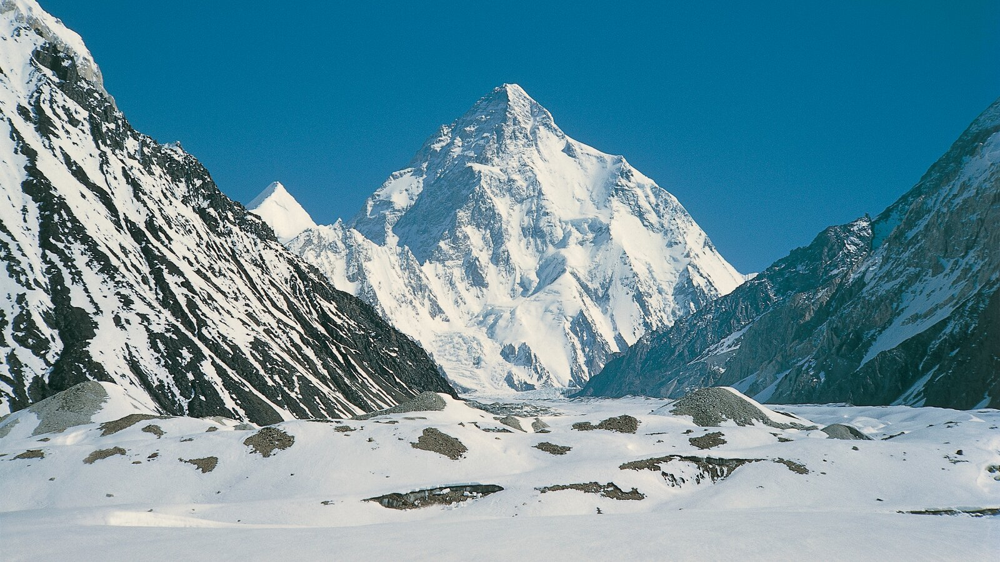
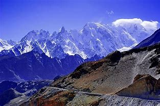

The Karakoram is a large mountain range spanning the borders between Pakistan, India and China,
located in
the regions of Gilgit-Baltistan (Pakistan), Ladakh (India), and Xinjiang (China). It is actually the
northwestern extension of the Himalaya.This range is home to many peaks over five miles in height,
including K2 (Mount Godwin Austen), the second
highest peak in the world (8,611 m/28,251 ft), and three other of the Earth's fourteen 8,000-meter
peaks
Gasherbrum I at 8,068 m. (26,471 ft), Broad Peak at 8,047 m. (26,402 ft), and Gasherbrum II at 8,035
m.
(26,363 ft).
The range is about 311 miles in length, and is the most heavily glaciated part of the
world outside the
polar regions. The Siachen Glacier at 44 miles long and the Biafo Glacier at 39 miles long are the
world's
second and third longest glaciers outside the Arctic and Antarctic areas. About 28-50% of these
mountains
are glaciated, much more than the Himalayan average of only 8-12% .
Karakoram

| Karakoram | |
|---|---|
|  | |
| Highest Peak | |
| Peak | K2 |
| Isolation | 1,316 km (818 mi) |
| Elevation | 8,611 m (28,251 ft) |
| Coordinates | 35°52′57″N 76°30′48″E |
| Geography | |
| Countries | Afghanistan, China, India, Pakistan and Tajikistan |
| Borders on | Pamir Mountains, Hindu Kush, Kunlun Mountains, Himalayas and Ladakh Range |